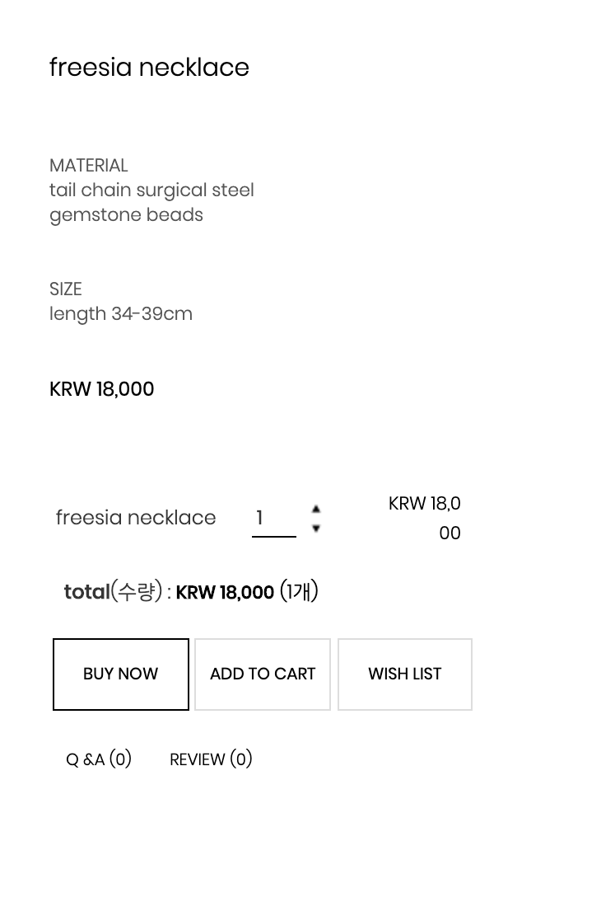
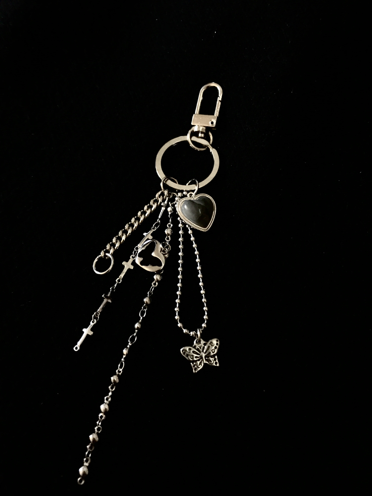
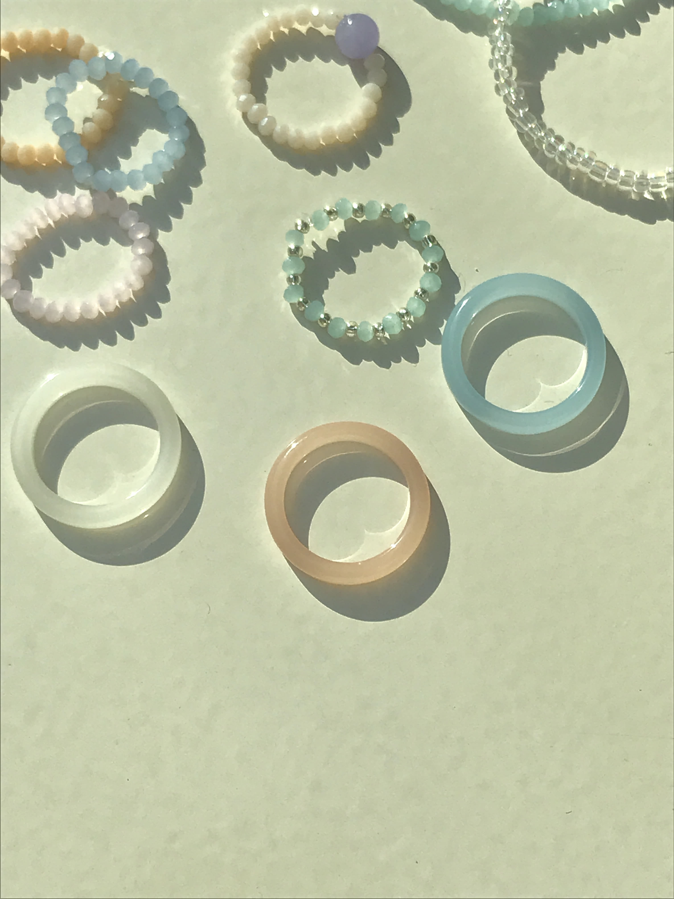
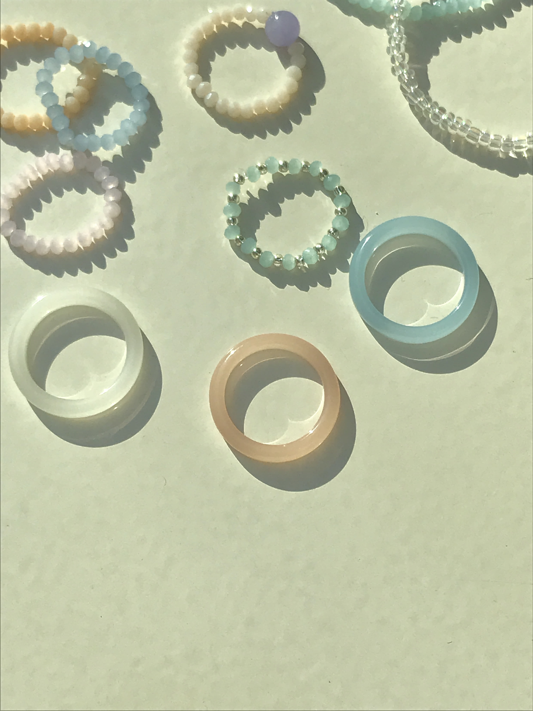
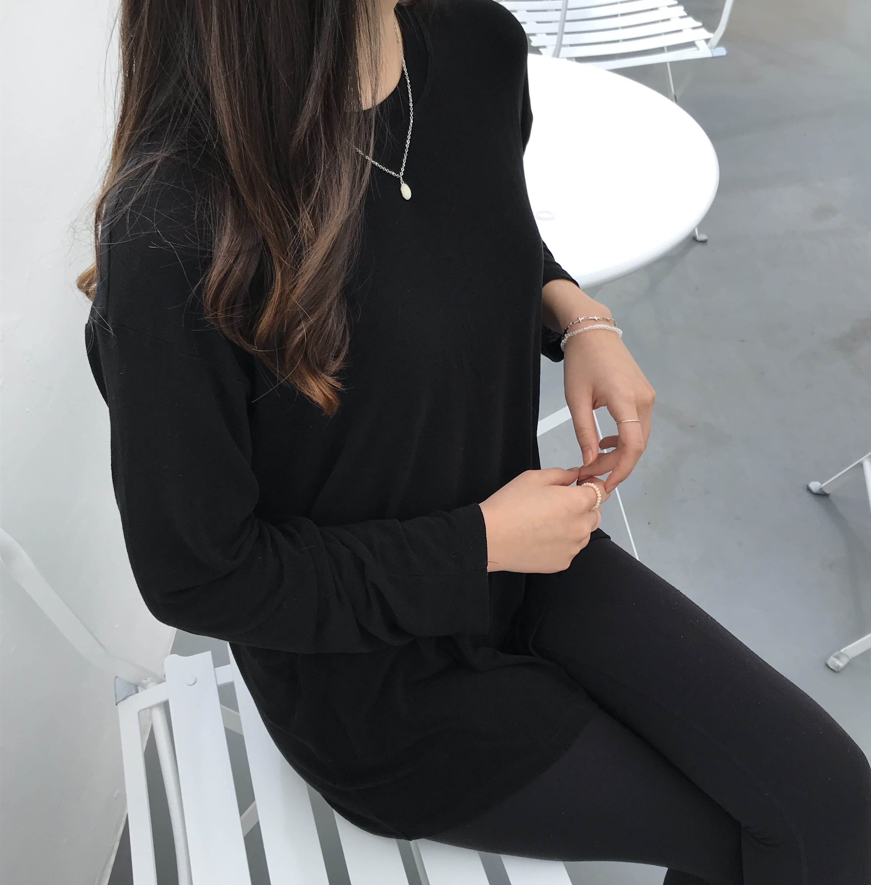
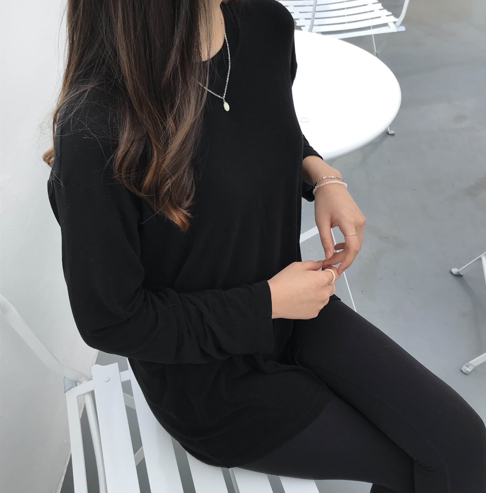
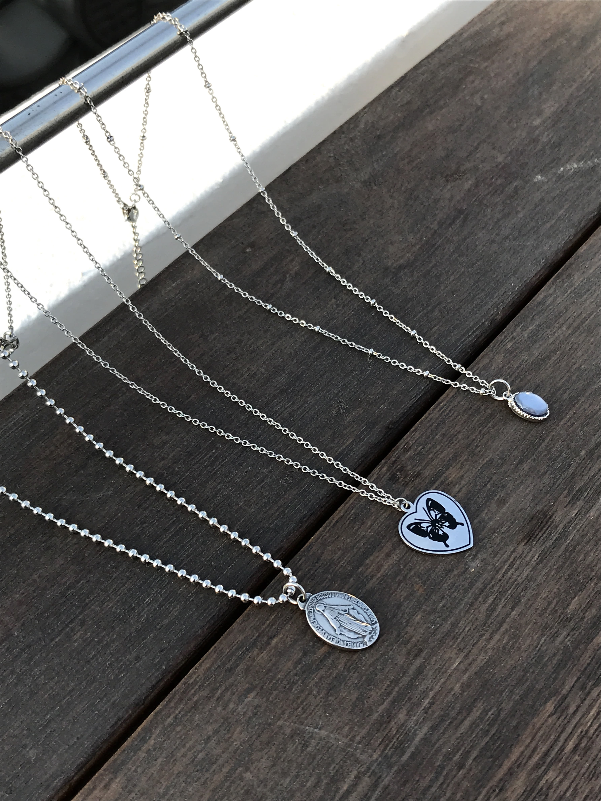
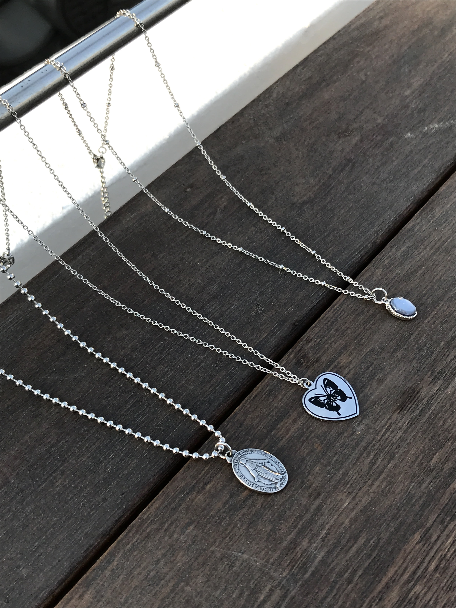

love young club 에서 당신을 빛나게 할 악세서리를 선택하세요.
LYC의 제품은 handmade로 만들어집니다.
LYC 2020 collection 시리즈는 현대에 트렌디하면서도 유니크한 스타일에
포인트가 될 수 있는 장신구들을 추구합니다.
잠금장치와 체인은 써지컬 스틸을 사용하여 디테일에 신경 썼습니다.
size: free
MATERIAL
surgical steel
gemastone beads
Made by young2view
necklace set [ 4 option]


anklets

keyring
ring set [2 option]
 

모델 착용샷


 

 
